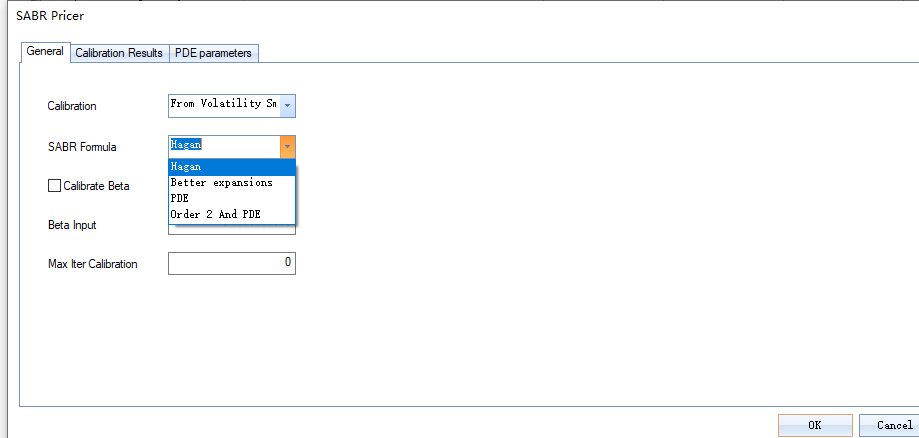

GetUISABRModel
函数功能说明
GetUISABRModel函数提供了处理UI界面中获取的参数和市场数据的功能，并使用SABR模型建模方法，输出模型参数和SABR模型计算的隐含波动率。若UI界面未能获得后面模型需要的参数，需要在该函数中定义。依据用户calibraion_method的不同选择，指定了SABR模型需要校准的参数组合，对应于后续不同的计算函数。
函数算法说明
互换期权（swaptions）波动率校准
依据不同的期权期限（maturity）、互换期限（tenor）给出市场点。对于每个期权期限、互换期限，SABR模型的参数进行分别校准。给定期权期限、互换期限和对应的微笑曲线（行权价的函数），我们寻找使得市场隐含波动率和模型波动率之间的最小的SABR参数，即：
其中
是使用行权价和对应市场波动率计算的Black-Scholes Vega，并且 校准过程使用了BFGS求解器。初始参数来自于反解的Hagan公式，它为下降算法提供了良好的初始点。
Caplet期权波动率校准
Caplet期权波动率的校准和互换期权（Swaptions）波动率的校准过程类似。市场点是给定期权期限、互换期限下的一系列行权价和对应波动率。对于每个期权期限、互换期限，SABR模型的参数是分别校准的。
Cap期权波动率校准
市场数据是市值隐含波动率。假设我们想根据以下市场数据来校准模型。
| cap maturity | cap tenor | strikes | volatilities |
|---|---|---|---|
其中是一系列行权价，是对应的市场波动率。
（1）第一成熟期
我们使用市场波动率计算，对应于每一个行权价，期权期限为、互换期限为的Cap期权价格。我们旨在使用该价格来校准模型。模型校准目标在于获得参数使得市场价格和Cap模型价格的最小。
（2）第二成熟期
我们使用市场波动率计算，对应于每一个行权价，期权期限为、互换期限为的Cap期权价格，我们旨在使用该价格来校准模型。我们推导出以为期权期限、为互换期限的Cap期权价格，并得到与之间的Caplet期权价格之和。校准思路是校准数量。模型校准目标在于获得参数使得市场数量和Caplet模型价格之和的最小，即：
其中 是使用SABR计算的Caplet期权模型价格之和，即： 其中是和的线性插值。
前端交互说明

SABR参数是根据特定场景的波动率曲面校准得到的，Calibration选项提供了参数校准的四种类型。
-
From User Input：手动输入校准结果，不进行任何算法校准
-
From Volatility Smile：
-
勾选Calibrate Beta时，使用用户在Beta Input输入的作为初始值，校准所有参数
-
不勾选Calibrate Beta时，使用用户在Beta Input输入的值，校准其他参数
-
-
Calibrate Only Alpha：仅校准
SABR Formula选项提供了SABR模型计算波动率的四种算法，可在下拉框选择。
- Hagan
- Better expansions
- PDE
- Order 2 And PDE
Max Iter Calibration框用于输入SABR模型校准的最大迭代次数，超过输入的迭代次数未达到校准目标视为模型运行失败。
.png)
“Calibration Result”窗口展示SABR模型校准的波动率参数信息（Calib. Maturity，Calib. Tenor，SABR Formula，Alpha等），同时还展示流程设定、日期、标的资产等信息（Underlying Code，Calibration ID等）。
参数表
入参表：
| 序号 | 入参 | 入参说明 | 类型 | 是否必须 | 数据来源 |
|---|---|---|---|---|---|
| 1 | calibration_method | 校准方法,option=['From User Input', 'From Volatility Smile', 'Calibrate only Alpha'] | str | 是 | Instrument |
| 2 | sabr_formula | 隐含波动率近似计算公式，option=['Hagan', 'Better expansions', 'PDE', 'Order 2 and PDE'] | str | 是 | Instrument |
| 3 | option_type | 期权品种,option=['Swaption', 'Caplet', 'Cap', 'Floorlet', 'Floor'] | str | 是 | MarketData |
| 4 | exercise_time | 根据期权行权时间不同划分，option=['European option', 'American option'] | str | 是 | MarketData |
| 5 | time | 一系列的时间对(,)，记数据长度为T | vector | 是 | MarketData |
| 6 | forward_price | 由time决定的远期利率，数据长度与time一致 | vector | 是 | MarketData |
| 7 | strike | 一系列的执行价，数据长度无需和time一致，记数据长度为n | vector | 是 | MarketData |
| 8 | market_vol | 市场在不同time和不同strike下的期权隐含波动率报价，数据长度(T,n) | matrix | 是 | MarketData |
| 9 | args | 其他非必须输入参数 | dict | 否 | Input |
出参表：
| 序号 | 出参 | 出参说明 | 类型 | 备注 |
|---|---|---|---|---|
| 1 | alpha_end | 经过优化的一系列alpha，数据长度为T | vector | |
| 2 | beta_end | 经过优化的一系列beta，数据长度为T | vector | |
| 3 | rho_end | 经过优化的一系列rho，数据长度为T | vector | |
| 4 | nu_end | 经过优化的一系列nu，数据长度为T | vector | |
| 5 | vol | 使用校准后参数计算得到的期权隐含波动率，数据长度(T,n) | matrix |
函数隶属类型
该函数隶属model，可应用于利率期权波动率建模。